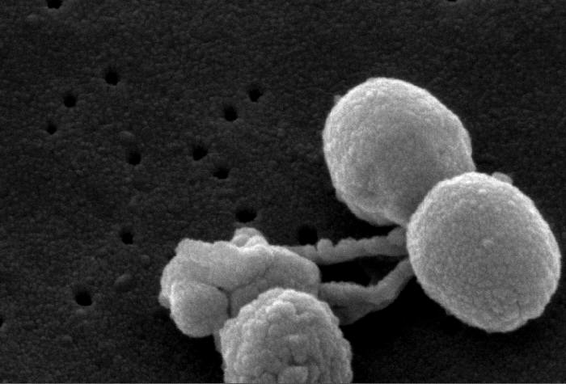

Streptococcus pneumonia
Did you know that...
Streptococcus pneumoniae is a normal inhabitant of the human upper respiratory tract. The bacterium can cause pneumonia, usually of the lobar type, paranasal sinusitis and otitis media, or meningitis, which is usually secondary to one of the former infections. It also causes osteomyelitis, septic arthritis, endocarditis, peritonitis, cellulitis and brain abscesses. Streptococcus pneumoniae is currently the leading cause of invasive bacterial disease in children and the elderly. Streptococcus pneumoniae is known in medical microbiology as the pneumococcus, referring to its morphology and its consistent involvement in pneumococcal pneumonia.
Streptococcus pneumoniae cells are Gram-positive, lancet-shaped cocci (elongated cocci with a slightly pointed outer curvature). Usually, they are seen as pairs of cocci (diplococci), but they may also occur singly and in short chains. When cultured on blood agar, they are alpha hemolytic. Individual cells are between 0.5 and 1.25 micrometers in diameter. They do not form spores, and they are nonmotile. Like other streptococci, they lack catalase and ferment glucose to lactic acid. Unlike other streptococci, they do not display an M protein, they hydrolyze inulin, and their cell wall composition is characteristic both in terms of their peptidoglycan and their teichoic acid.
Additional Information
Photages
Disease in Humans
Streptococcus pneumonia can cause Pneumonia
Pneumonia is a disease of the lung that is caused by a variety of bacteria including Streptococcus, Staphylococcus, Pseudomonas, Haemophilus, Chlamydia and Mycoplasma, several viruses, and certain fungi and protozoans. The disease may be divided into two forms, bronchial pneumonia and lobar pneumonia. Bronchial pneumonia is most prevalent in infants, young children and aged adults. It is caused by various bacteria, including Streptococcus pneumoniae. Bronchial pneumonia involves the alveoli contiguous to the larger bronchioles of the bronchial tree. Lobar pneumonia is more prone to occur in younger adults. A majority (more than 80%) of the cases of lobar pneumonia are caused by Streptococcus pneumoniae. Lobar pneumonia involves all of a single lobe of the lungs (although more than one lobe may be involved), wherein the entire area of involvement tends to become a consolidated mass, in contrast to the spongy texture of normal lung tissue.

Streptococcus Pneumoniae in Electron Micograph
Back